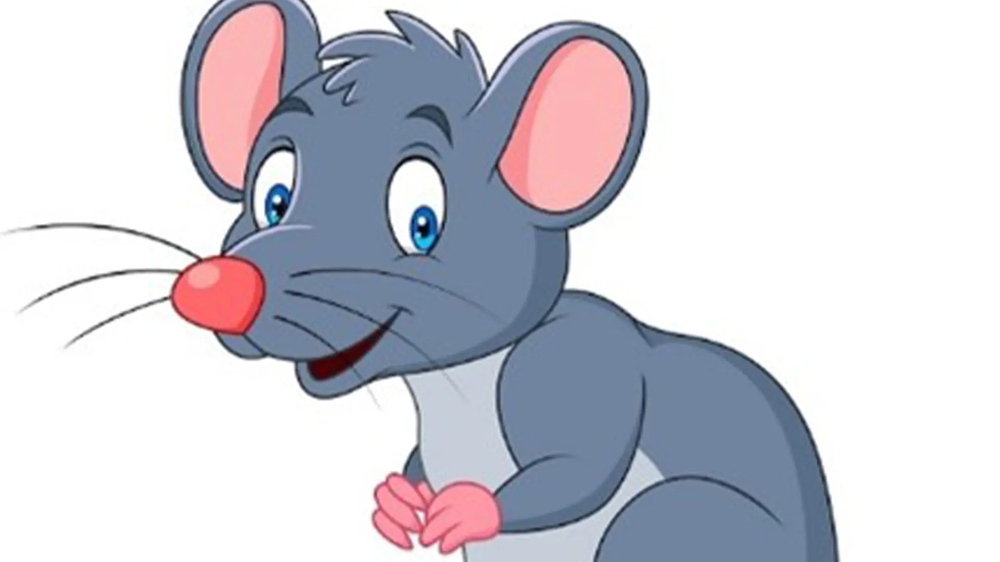
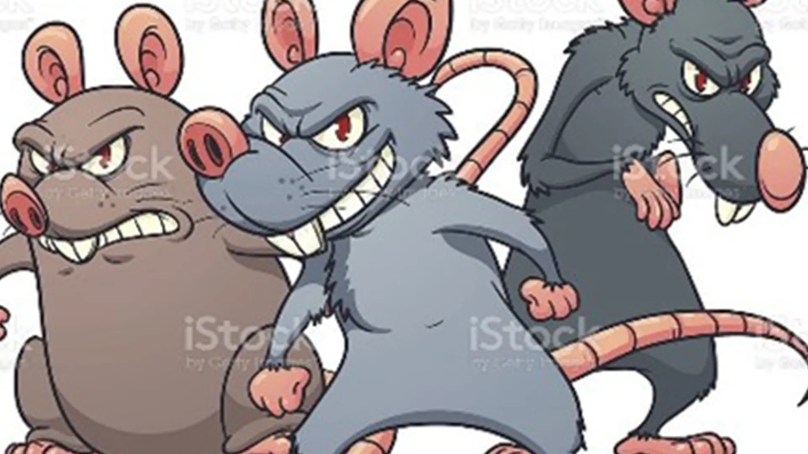
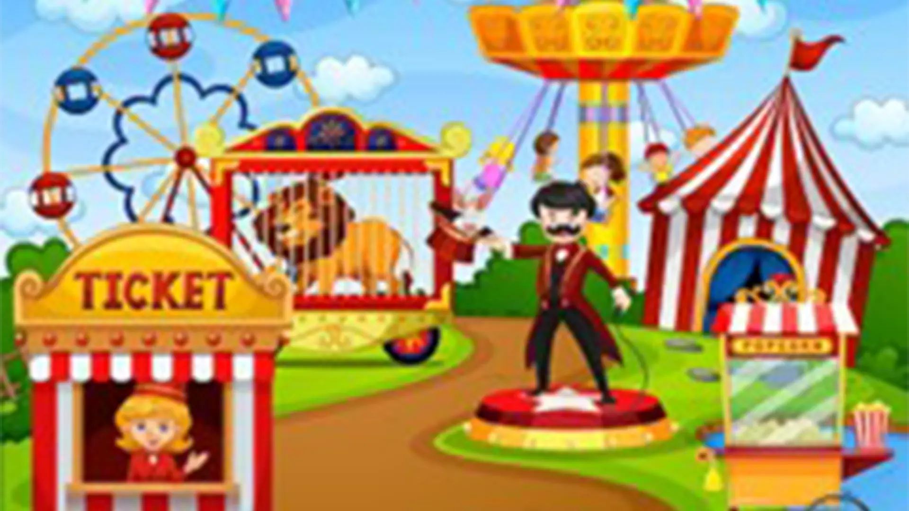
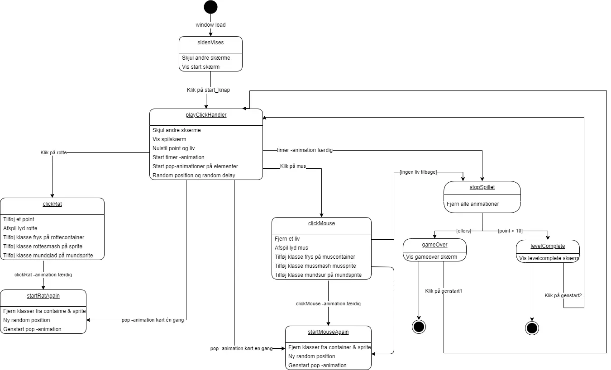
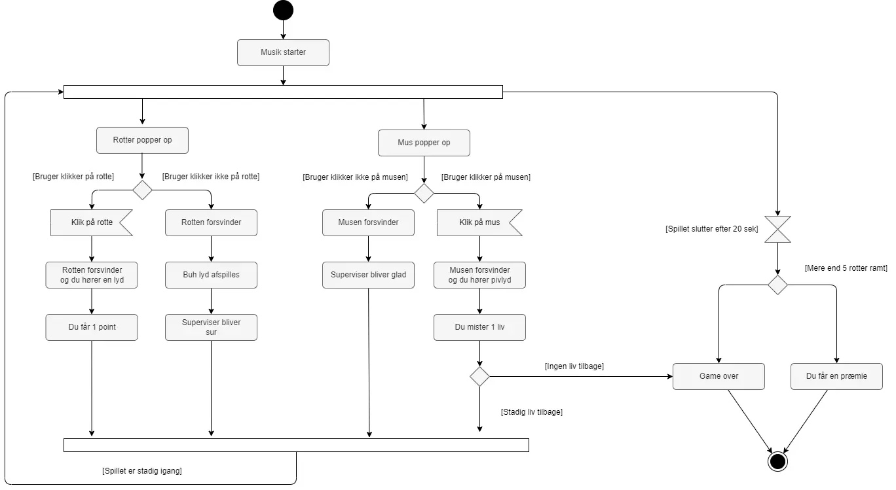

Animation
I dette tema skulle vi producere vores eget spil for at lære grundlæggende JavaScript.
Min største udfordring i dette tema var at få alle mine funktioner til at virke og spille sammen, især
var array en udfordring da vi ikke fik så meget undervisning i dette og det var lidt at prøve sig frem.
Det galt om at have en logisk tankegang og gå metodisk til værks og få en ting til at virke af gangen
før man gik videre til den næste.
Designproces
Processen startede
med
ideudvikling til et spil, aktivitetsdiagram samt hvilken stil spillet skulle være designet i.
Jeg valgte at fokusere på en lidt animeret stil inspireret af Baby bias og solid-drawing. Jeg
implementerede også Bouba og Kiki design princippet for at gøre forskel på min gode og onde karakterer.
I designprocessen startede jeg med at lave papirsprototyper for så at arbejde videre med dem og rentegne
i Illustrator.
Udfordringen i den valgte stilart var at der ikke kunne laves almindelige skygger og strokes men det
skulle tegnes og bruge gradienter for at give den ønskede effekt.
Da jeg havde tegnet, mine elementer var det tid til at kode spillet. Jeg havde valgt at udfordre mig selv
ved at lave et wack a mole spil, med henholdsvis mus og rotter som skulle komme op af specifikke huller.
Inspirationsbilleder



Skitser


Rentegnede elementer
LINK TIL SPIL
Kodning
I kodningsprocessen lærte jeg hvordan man kan lave css-animationer samt bruge JavaScript til at aktivere
de forskellige animationer.
For at kode spillet brugte jeg JavaScript at fjerne og tilføje forskellige classes til mine
elementer, bruge if or else, math-random, forskellige events som load, animationend og click samt array
for at mine elementer ikke skulle poppe up det samme sted. Via inspector – consol i browseren kunne jeg
se hvordan koden opførte sig, fejlsøge og rette til.
Inden kodningsprocessen havde jeg lavet et state machine diagram for at havde et overblik over hvordan
spillet skulle kodes og rettede det løbende i processen. Til sidst producerede jeg mine egne lyde til
spillet via Audition samt en underlægnings melodi som jeg havde sørget for var royalfree og krediterede
kunstneren.
State Machin Diagram
Aktivitetsdiagram

